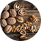

25 % овощей
Чем больше овощей и их разнобразия, тем лучше. Добавление овощей к любому блюду способствует лучшему его усвоению
15 % фруктов
Ешьте больше фруктов разноцветных и разных. Они укрепляют иммунную систему, которая помогает оргвнизму бороться с болезнями

25 % круп
Ешьте продукты из цельного зерна (например коричневый рис, цельнозерновой хлеб). Они снижают риск сердечных заболеваний и рака. Избегайте переработанного мяса
25 % белков
Выбирайте мясо рыбы, птицы, бобовые и орехи; ограничьте красное мясо. Белки необходимы для роста, возобновления клеток и тканей организма
Вода
Пейте воду, чай или кофе (с небольшим количеством сахара или без него). Ограничьте молочные продукты до 1-2 порций в день.
Масла
Используйте здоровые масла (например оливковое или канола) для приготовления пищи. Избегайте трансжиров.
фруктов и овощей

Тыква

Авокадо

Черника

Лайм
Грейпфрут
Все ингредиенты
Салат из шпината
Вафельный торт с безе и фруктами


Салат из авокадо с грецкими орехами


Тыквенный крем-суп с травами


Фисташковое печенье


Жареная полента с грибами


Фисташковый кекс с клубникой

Равиоли с крапивой и рикоттой


Салат из чечевицы и цветной капусты

Все рецепты